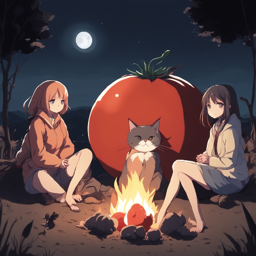
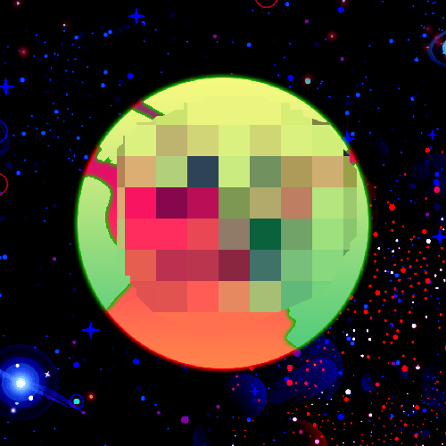
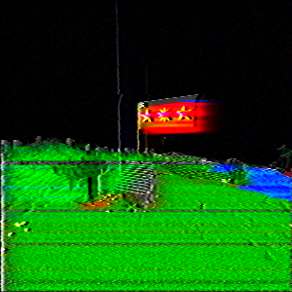

hi! i decided, that the regular kat page, and well, even the main "misc" page wouldnt fit the content i
would like to add here. so what the hell is this place? well, im planning on adding personal
experiences, lore and other stuff on this page, since i dont think any other page fits.
to be
fair though, i still dont know what i will put here, i will jokingly add this part, because i think it
will be funny, if this said "i dont have any ideas", and by some miracle this page becomes the most
packed page. that'd be funny innit.
ok, but genuinely, what will be here? well, personal eras,
and other shi i deem valuable enough to be here. i highly believe, that this page will look the least
complete/professional or katpage-like, but thats the way it will be. i kind of tried to aim for a 90s
page style. so yea.
|
|
| era |
duration |
major events |
???
 |
from ??? to ??? |
- bbd
|
eurobeat era
 |
from 2025 april to present
[end predicted to be 2025 christmas] |
- rediscovering eurobeat from an old playlist [2025 april]
- revival of katrewkate yt [for a while, 2025 april]
- kat starts his driving lessons [2025 may]
- kat gets w mushroomgurl [2025 may/june]
- kat studies for theory test b cat [2025 may, the *TRUE* start of this era]
- visit to sventoji and warszawa, leading to the event below :P [2025 august]
- creation of waffologia, kat/mellxw tiktok pages, etc. [2025 august]
- vafelkis.github.io becomes
the main project of katrewkat [2025 july/august]
- kat turns 18 [2025 sep]
- kat gets his b cat driver's license [2025 oct]
- shift in transparency on website [disclosing even quite personal stuf, 2025 oct/nov]
- quite rapid and intense progres on this site :D [2025 oct-nov]
- katrewkate.github.io now
leadz to the main site. [2025 nov]
- kat n mushroomgurl break [2025 nov 7]
- no updates [nov 9 - late 12th] due to events above :( [on the bright side, i went outside, a lot. so i touched grass, deal with it :D]
- kat & mushroomgurl stop talking FULLY [2025 nov 11] :(
- kat being more open about website and other personal/vulnerable stuff [post 2025 nov 11] :O
- future of the website, and everything else is unclear as of nov 12th, 2025 [albeit, likely unchanged:D]
|
fight club era
 |
from 2024 december to 2025 april |
- discovering fight club and watching a few moviez.
- a few katrewkate videoz :D
- attempting to get "BACK ON TRACK" [hehe, get it?]
- studying, reading books n shi, grinding.
- meetz mushroomgurl.
- creates diary and audio recordingz :P
- decline of music creation :(
- new style, new friendz.
- creation of vafelkis.github.io :)
|
the following will rely on music
[eras/playlist], and other stuff, to
determine the eras
legend to understand designations for variants of songs,
etc.
|
the upfall arc [mini-era]
 |
from 2025 [those who know. one typo -
kat: changez the entire timeline... 2024*] november 24th to dec
1st |
- all songs were released with i/ive versions
- renewed hope with sm from previous eras
- things in general getting bettah
- remasters of a few songz.
|
the fall era
 |
from 2024 sep 18th to 2024 november 24th |
- released fourrr new songz ["bro", "and when", "branching out", "own
hands"]
- kat falling in luv with cod mw series and liked ghost's character
lowkey, mf had some jokez
- mostly just an era in between
- first time having drank.
- creation of boat
|
the dead [summer arc] era
|
2024 may to 2024 sep 18 |
- mostly a boring era with only remixes of older songz
- summer, new phone
- best friend leaves school [rip rock, da goat] :(
- discovering new thingz.
|
the "changing" era
 |
2024 feb to 2024 may |
- an era, where katrewkate slowly replaced vafelkis
- a few songs, mainly remixes of empress, and a ve version release
- kat creates an ad for the lt company "dvaro" for a school project,
[pieno zvaigzdes ab, sponsor me atp]
- idk wat else to put yet
|
the descent era
 |
from 2023 dec 1 to 2024 feb |
- release of a song that is to this day the one with the most
references [sound effects, references to events, etc]
- dying for a2 category [regitra] and ktms
- lowkey sad period + rise and fall of mr codem [rip man]
- dissing AS with rock. im not kidding. LOL
- playing gta v with buddies and being kind of sad, cuz the last era
kind of failed me 💀 ifykyk
- one of the most creative eras of all time :) as many covers were
released, etc.
- kat releases track with tunecore, but then deletz, cuz it broke shi.
|
the "original" era
 |
from 2023 october 10th to 2023 december 1st |
- released a new song referencing vynoteka and shi, called "sophomore"
[dogshit.mp3... not kidding, thats the actual file name]
- developed a crush on someone lowkey 💀 [the blondie 🙄]
- moped crash, as noted in the newspapers [kat page] :D
- shifting music taste and interests.
- creation of mellxweye
[karuboom at the time] by releasing "its
been so long" phonk remix after getting permission.
|
other eras arent very well defined or at all,
so they might be lowkey inaccurate and are here just to... be
here, really. :D
|
the summer era
 |
from 2023 june to 2023 oct |
- katrewkatesmp & creation of wafelica.
- many current katverse brandz originated here. [vafducks, vafmarket]
- kat joins a friend group called caravandoug78
- started experimenting with music again
- creation of katrewkate
|
the "fire" era
 |
from 2023 jan to 2023 june |
- inrl server :)
- quite a chill time
- kat gets along w many people
- gets 1st license:D
- rise and fall of multiplybyinfinity
|
the bc era
 |
from 2022 april to 2023 jan |
- creation of multiple discord botz [ones for bc too]
- rise and fall of tweed [yt]
|
the weird era
 |
from 2021 october to 2022 april |
- creation of archania anthem [2022 feb 14]
- kat experiences extremism
- fall of litva / fall and rise of mellow falls / zwenius labs inc
- shift in music taste [from phonk to oldschool/less complex genres]
|
the litva era
 |
2021 april to 2021 october |
- rise of litva
- total fall of notstrixx
- first discord bots [that actually work.. wtf?!]
- vynoteka jokes
- ice cream jokez, and also me getting covid.
- global utilities early versions
|
the 'strixx era
|
2020 may to 2021 april |
- rise of notstrixx [and a bit of the fall]
- youtube channel notstrixx, twitch streamz
- raids, a bunch of shi
- bunch of shenanigans online, most of which were pretty hurtful
- 112 total subscribers reached :D
|
| none |
mangomodz era
 |
2018/2019 to 2019 sep |
- mango pfp [literally]
- modding in gta v [cracked mp servers 💀]
- first purchase of a gaming pc :D
|
the rest
of the eras are not important to the context of the site, or anything else for that
matter. |
eurobeat era
an era that started actually quite accidentally, it all started when i found and downloaded an old
playlist i knew existed, and then i decided to go take my license, and well, the cover of the playlist
was a car, so i listened to it, and then i passed, since then, i guess that playlist was all the hype.
[insert katlore's eurobeat shi]. now, however, as of
writing in late
oct, the era is mostly dead and over, i like to say, that the era ended around then, when i passed my b
cat exam.
fight club era
the fight club era was around the 20th of dec 2024, when i watched fight club for the first time and
actually enjoyed it, and the message. having had my mental health destroyed by the previous era, i felt
horrible and decided to have my own "fight club" bubble, eventually i started yapping about it and its
messages and the movie itself, because i kind of started to like the philosophy of it and such, and it
actually became one of the best eras in my life, despite being a bit wanky and all over the place, i
feel liek i grew as a person, because i read books, found out my limits, became more confident, started
loving myself just a little bit more. ended due to a stagnation [of the era] and shifting interests. the
theme song for this is actually
where is my mind
[acoustic... like me]
explaining other references:D
- blondez [blondies] ~ originally a joke between me and mushroomgurl. context being that at some point i used to tease her for being dark-haired, and apparently i radiated lovelyness towards blondes or sum shi, and eventually i trusted her bish ahh enough [if youre reading this, then 🙄] to tell her about my previous shizzzz, which unironically was blonde. here came the "blondie softspot"; these jokes however, eventually ended up even in our relationship phase [the joke originated while we were early on as friends] and eventually contributed to the full collapse of our relationship in november of 2025. [rip :(]
- #stayfreaky ~ also originally a joke between me and mushroomgurl. context is that we would occasionally [and sometimes even just on my own] make jokes about the phrase "#stayfreaky", because i jokingly used to send her bandaloonies sum damn "freaky" tiktokz, and well. yea :d
- "WHOSE F***** IDEA WAS IT TO ADD TUNG TUNG TUNG SAHUR TO REPO???" ~ a phrase spoken by a very wise man from the southern lands of moroco or sum shi. on sum day in fckin june of 2025, a certain tomato spoke out about tung tung tung sahur chasing him down in the game "REPO", where two of the three playerz were dead, and that guy was the only one still alive. bless the dude and it was a laughing stock for everyone hearing those words :P in a clip of shity quality.
reminder to myself to add page descriptions n shi here :3